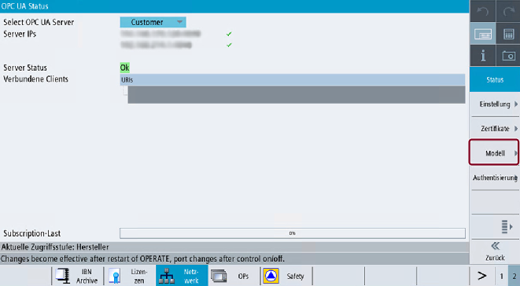

Um eine komfortable Methode zum Arbeiten mit einem kundenspezifischen Objektmodell bereitzustellen, bietet der OPC UA-Dialog einen speziellen Bereich, der mit dem Softkey "Modell" aufgerufen werden kann.
Softkey "Modell"
Der SINUMERIK Operate-Dialog bietet folgende Funktionalität:
Import der binären CSOM-Datei(en) von einem USB-/Netzwerklaufwerk oder über AMM
Dateinamen der ausgewählten binären Datei(en) anzeigen
Namespaces der ausgewählten binären Datei(en) erweitern und anzeigen
Ausgewählte binäre Datei(en) löschen
Ausgewählte binäre Datei(en) aktivieren
Ausgewählte binäre Datei(en) deaktivieren
| Hinweis |
Die Änderungen sind erst nach einem Neustart des OPC UA Servers sichtbar. |